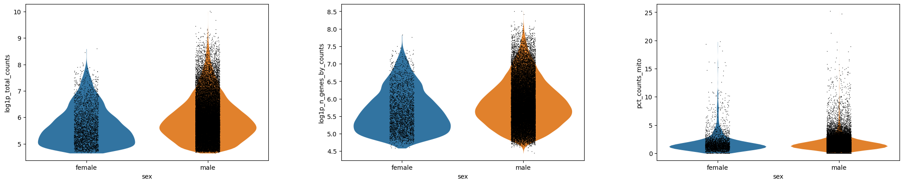

¿Es mi conjunto de datos de células únicas un conjunto de calidad?
¿Cómo genero y anoto agrupamientos de células?
¿Cómo selecciono el umbral y los parámetros en mi análisis? ¿Cuál es un número “razonable”? ¿Colapsará el mundo si selecciono uno incorrecto?
Objetivos:
Interpretar gráficos con control de calidad para decidir los valores de los parámetros
Repetir el análisis desde una matriz hasta agrupamientos
Identificar puntos de decisión
Evaluar salidas de datos y decisiones
Explicar por qué el análisis de células únicas es un proceso iterativo (es decir, los primeros gráficos que se generan no son definitivos sino que has de volver y re-analizar los datos)
Has hecho el trabajo para crear una matriz de células únicas, con recuentos de genes y mitocondrias y con grupos de metadatos celulares de todas tus variables de interés (si no, por favor consulta este tutorial para hacerlo). Ahora analizaremos completamente nuestros datos para eliminar las células con poca calidad, para reducir las dimensiones de los datos que dificultan el trabajo, y finalmente, para intentar definir nuestros agrupamientos ¡y darles significado biológico! Hay muchos paquetes para analizar datos de células únicas - Seurat Satija et al. 2015, Scanpy Wolf et al. 2018, Monocle Trapnell et al. 2014, Scater McCarthy et al. 2017, etc. Aquí trabajaremos con Scanpy porque es la opción con más herramientas disponibles en Galaxy.
Comentario: ¿Tutoriales por todos lados?
Este tutorial es similar a otro tutorial fantástico: Clustering 3k PBMC. Este tutorial profundiza mucho más en el análisis, en particular en la visualización y la ciencia tras la identificación de marcadores. Todos los pasos se ilustran a la perfección ya que los datos experimentales están limpios y bien anotados. Aquí, trabajaremos con datos más desorganizados para ayudarte a tomar decisiones durante el análisis. Te recomendamos que sigas los tutoriales de célula única disponibles para aumentar tu confianza y experiencia. Para instructores: ten en cuenta que este tutorial dispone de opciones para grupos pequeños.
Te proporcionamos un conjunto de datos experimentales de ratón de restricción en el crecimiento fetal Bacon et al. 2018. Este es el conjunto de datos generado a partir de este tutorial si usaste los ficheros FASTQ completos en vez de los reducidos (ver el estudio del Single Cell Expression Atlas aquí y todos los datos del proyecto aquí). Puedes encontrar estos datos en este historial de entrada o descargarlo del link a Zenodo que aparece más abajo.
Abre el manejador de carga de datos de Galaxy (galaxy-upload en la parte superior derecha del panel de herramientas)
Selecciona ‘Pegar/Traer datos’ Paste/Fetch Data
Copia los enlaces en el campo de textos
Presiona ‘Iniciar’ Start
Close Cierra la ventana.
Galaxy utiliza los URLs como nombres de forma predeterminada , así que los tendrás que cambiar a algunos que sean más útiles o informativos. the window
Cambiar nombregalaxy-pencil de los conjuntos de datos Mito-counted AnnData
Verificar que el tipo o formato de los datos es h5ad
Selecciona sobre el galaxy-pencilicono del lápiz para editar los atributos del conjunto de datos
Selecciona en la pestaña galaxy-chart-select-dataDatatypes en la parte superior del panel central
Selecciona h5ad
Da clic en el botón Change datatype
Filtrado
Has generado un objeto anotado de tipo AnnData a partir de tus archivos FASTQ de secuenciación de ARN de células únicas sin procesar. Sin embargo, sólo has completado un filtrado “aproximado” de tus datos - todavía hay muchas “celdas” que son fondos procedentes de gotas vacías o simplemente de baja calidad. Habrá también genes que podrían ser artefactos o que aparecen con tan baja frecuencia que las herramientas estadísticas fallan al analizarlos. Este ruido tanto en las células como en los genes no sólo hace difícil distinguir la información biológica real del ruido, sino que también intensifica la parte computacional del análisis. ¡Las lecturas espurias consumen gran parte de la capacidad computacional de analizar! Lo primero que tenemos que hacer pues es filtrar la matriz para obtener datos limpios y poder extraer información significativa para acelerar el análisis.
Preguntas: Preguntas
¿Qué información se almacena en tu objeto AnnData? La última herramienta para generar este objeto contó los genes asociados a la mitocondria en tu matriz. ¿Dónde están almacenados los datos?
Mientras lo averiguas, ¿cuántos genes y células hay en tu objeto?
Es preferible usar la misma herramienta que usaste en el tutorial previo para examinar tu AnnData, porque ¡no es tan sencillo como examinar el conjunto de datos Anndata en el historial!
Práctica: Inspeccionando objetos AnnData
Inspect AnnData ( Galaxy version 0.7.5+galaxy0) con los siguientes parámetros:
param-file“Annotated data matrix”: Mito-counted AnnData
“What to inspect?”: General information about the object
Inspect AnnData ( Galaxy version 0.7.5+galaxy0) con los siguientes parámetros:
param-file“Annotated data matrix”: Mito-counted AnnData
“What to inspect?”: Key-indexed observations annotation (obs)
Inspect AnnData ( Galaxy version 0.7.5+galaxy0) con los siguientes parámetros:
param-file“Annotated data matrix”: Mito-counted AnnData
“What to inspect?”: Key-indexed annotation of variables/features (var)
Si examinas tu objeto AnnData encontrarás un número de métricas de control de calidad diferentes tanto para células toolobs como tool genes var.
Por ejemplo, puedes ver n_cells bajo var, que cuenta el número de células en las que aparece el gen.
En obs, tienes métricas discretas y basadas en registros para n_genes, cuántos genes se cuentan en una célula, y n_counts, cuántas UMIs se cuentan por célula. Así que, por ejemplo, puedes contar múltiples GAPDHs en una célula. Por lo tanto, tu n_counts debería ser más alto que n_genes.
¿Pero qué ocurre con la mitocondria? Dentro de la información de las células obs, se han calculadototal_counts_mito, log1p_total_counts_mito, y pct_counts_mito para cada célula.
Puedes verlo en la salida de tool **General information about the object ** que la matriz es 25281 x 35734. Esto es obs x vars, o mejor, células x genes, así que existen 25281 células y 35734 genes en la matriz.
timeBuen consejo para ahorrar tiempo - ¡convierte las tres salidas de Inspect AnnData señaladas arriba en un workflow para tener acceso rápido!
Elimina cualquier trabajo fallido o no deseado de tu historial.
Haz clic en Opciones de historial (icono de engranaje galaxy-gear) en la parte superior del panel de historial.
Selecciona Extraer flujo de trabajo
Verifica los pasos, ingresa un nombre para tu flujo de trabajo y presiona el botón Crear flujo de trabajo.
Generar gráficos de control de calidad
Queremos filtrar nuestras células, pero primero necesitamos saber cómo se ven nuestros datos. Hay un número de elecciones subjetivas por hacer en el análisis de scRNA-seq, por ejemplo ahora necesitamos nuestras mejores decisiones basadas en dónde establecer nuestros umbrales (¡más sobre eso, muy pronto!). Vamos a graficar nuestros datos en distintas formas. Distintas personas dedicadas a la bioinformática podrían preferir ver los datos de formas diferentes, y acá sólo estamos generando algunos de la miríada de gráficos que se pueden usar. En última instancia, necesitas avanzar con lo que tenga más sentido para ti.
timeBuen consejo para ahorrar tiempo - ¡convierte los siguientes gráficos QC en un workflow así puedes ejecutarlos de nuevo fácilmente mientras analizas tus datos!
Creando los gráficos
Práctica: Haciendo gráficos QC
Plot with scanpy ( Galaxy version 1.7.1+galaxy0) con los siguientes parámetros:
param-file“Annotated data matrix”: Mito-counted AnnData
“Method used for plotting”: Generic: Violin plot, using 'pl.violin'
“Keys for accessing variables”: Subset of variables in 'adata.var_names' or fields of '.obs'
“Keys for accessing variables”: log1p_total_counts,log1p_n_genes_by_counts,pct_counts_mito
“The key of the observation grouping to consider”: genotype
Plot with scanpy ( Galaxy version 1.7.1+galaxy0) con los siguientes parámetros:
param-file“Annotated data matrix”: Mito-counted AnnData
“Method used for plotting”: Generic: Violin plot, using 'pl.violin'
“Keys for accessing variables”: Subset of variables in 'adata.var_names' or fields of '.obs'
“Keys for accessing variables”: log1p_total_counts,log1p_n_genes_by_counts,pct_counts_mito
“The key of the observation grouping to consider”: sex
Cambiar nombregalaxy-pencil de salida a Violin - sex - log
Plot with scanpy ( Galaxy version 1.7.1+galaxy0) con los siguientes parámetros:
param-file“Annotated data matrix”: Mito-counted AnnData
“Method used for plotting”: Generic: Violin plot, using 'pl.violin'
“Keys for accessing variables”: Subset of variables in 'adata.var_names' or fields of '.obs'
“Keys for accessing variables”: log1p_total_counts,log1p_n_genes_by_counts,pct_counts_mito
“The key of the observation grouping to consider”: batch
Cambiar nombregalaxy-pencil de salida a Violin - batch - log
Plot with scanpy ( Galaxy version 1.7.1+galaxy0) con los siguientes parámetros:
param-file“Annotated data matrix”: Mito-counted AnnData
“Method used for plotting”: Generic: Scatter plot along observations or variables axes, using 'pl.scatter'
“Plotting tool that computed coordinates”: Using coordinates
“x coordinate”: log1p_total_counts
“y coordinate”: pct_counts_mito
Cambiar nombregalaxy-pencil de salida a Scatter - mito x UMIs
Plot with scanpy ( Galaxy version 1.7.1+galaxy0) con los siguientes parámetros:
param-file“Annotated data matrix”: Mito-counted AnnData
“Method used for plotting”: Generic: Scatter plot along observations or variables axes, using 'pl.scatter'
“Plotting tool that computed coordinates”: Using coordinates
“x coordinate”: log1p_n_genes_by_counts
“y coordinate”: pct_counts_mito
Cambiar nombregalaxy-pencil de salida a Scatter - mito x genes
Plot with scanpy ( Galaxy version 1.7.1+galaxy0) con los siguientes parámetros:
param-file“Annotated data matrix”: Mito-counted AnnData
“Method used for plotting”: Generic: Scatter plot along observations or variables axes, using 'pl.scatter'
“Plotting tool that computed coordinates”: Using coordinates
“x coordinate”: log1p_total_counts
“y coordinate”: log1p_n_genes_by_counts
“Color by”: pct_counts_mito
Cambiar nombregalaxy-pencil de salida a Scatter - genes x UMIs
Analizando los gráficos
¡Eso fue mucha información! Abordemos por secciones y veamos qué preguntas pueden ayudar a resolver estos gráficos. El scratchbookgalaxy-scratchbook puede ser útil aquí para ver los distintos gráficos al mismo tiempo.
Si deseas ver dos o más conjuntos de datos al mismo tiempo, puedes usar la función Scratchbook en Galaxy: 1. Haz clic en el icono Scratchbookgalaxy-scratchbook en la barra de menú superior. - Debería aparecer ver una pequeña marca de verificación en el icono 2. Vergalaxy-eye un conjunto de datos haciendo clic en el icono de ojo galaxy-eye para ver el resultado. - Deberías ver la salida en una ventana emergente sobre Galaxy - Puedes cambiar el tamaño de esta ventana arrastrando la esquina inferior derecha 3. Haz clic fuera del archivo para salir del Scratchbook 4. Vergalaxy-eye un segundo conjunto de datos de tu historial - Ahora deberías poder ver una segunda ventana con el nuevo conjunto de datos - Esto hace que sea más fácil comparar las dos salidas. 5. Repite estos pasos para todos los archivos que desees comparar. 6. Puedes desactivar Scratchbookgalaxy-scratchbook haciendo clic en el icono nuevamente.
Preguntas: Pregunta - Variación en lote
¿Existen diferencias en la profundidad de secuenciación a lo largo de las muestras?
Teniendo en cuenta que está en escala logarítmica - lo que significa que pequeñas diferencias pueden significar grandes diferencias - la representación en forma de violín tiene probablemente un aspecto similar.
N707 y N703 podría presentar unos valores de conteo y de genes (o UMIs) un poco bajos, pero las diferencias no son catastróficas.
El pct_counts_mito se mantiene similar en los diferentes lotes, una buena señal.
En este caso, nada parece indicar que tengamos que eliminar una muestra de nuestro análisis, pero si ves algo completamente diferente del resto, ¡tendrás que cuestionarte por qué y eliminarlo de tu experimento!
Preguntas: Pregunta - Variables biológicas
¿Hay diferencias en la profundidad de secuenciación en los diferentes sexos? ¿Genotipos?
¿Qué gráfico aborda esto?
¿Cómo interpretas las diferencias en sex?
¿Cómo interpretas las diferencias en genotype?
Al igual que anteriormente, los diagramas violin - sex - log y violin - genotype - log tendrán lo que buscas.
Open image in new tab
No hay grandes diferencias en profundidad de secuenciación en los diferentes sexos diría yo - ¡aunque tú puedes no estar de acuerdo!
Está claro que hay menos células femeninas, cosa que tiene sentido dado que sólo una de las muestras era femenina. Nota - esto fue un descubrimiento desafortunado tras la generación de librerías. ¡Es bastante difícil identificar el sexo de neonatos en el laboratorio! En la práctica, intenta no dejar que un factor así influya en tus datos! Podrías considerar volver a ejecutar todos los análisis que vienen a continuación sin la muestra femenina si quieres.
Sin embargo, en el gráfico Violin - genotype - log, podemos ver que hay una diferencia. Las muestras knockout tienen claramente menos genes y conteos. Desde el punto de vista experimental, ¿tiene esto sentido?
¿Sería esperado desde el punto de vista biológico que esas células sean menores o tengan menos transcritos? Posiblemente, en este caso, dado que esas células fueron generadas de ratones neonatales con restricción de crecimiento y en cuyo caso no tenemos que preocuparnos sobre buenos datos, sino tener en mente esto cuando generamos agrupaciones, ya que queremos definir la profundidad de los clusters, ¡queremos que la biología lo haga!
Por otro lado, podría ser que esas células no sobrevivieron la disociación tan bien como las células sanas (en cuyo caso esperaríamos más genes asociados a la mitocondria, que no vemos, ¡así que podemos descartarlo!).
Quizás preparamos pobremente las librerías para esas muestras knockout concretamente. Hay solo tres, así que puede que esas muestras estén poco secuenciadas.
Entonces, ¿Qué hacemos con todo esto?
Idealmente, consideramos la re-secuenciación de todas las muestras pero con una concentración más alta de muestras knockout en la librería.
Cualquier persona experta en bioinformática te diría que la mejor forma de obtener datos limpios es en el laboratorio ¡y no en el ordenador! Desgraciadamente, las mejores prácticas no son necesariamente una opción realista en el laboratorio - por ejemplo, ¡la línea celular de ratón fue larga! - así que a veces, tenemos que obtener lo mejor de nuestros datos. Hay opciones para intentar abordar la discrepancia en la profundidad de secuenciación. Por tanto, vamos a continuar con las muestras y ver si podemos encontrar relevancia biológica a pesar de las diferencias técnicas.
Ahora que hemos evaluado la diferencia en nuestras muestras, miraremos a las librerías en general para identificar los umbrales apropiados para nuestro análisis.
Preguntas: Pregunta - Filtrar umbrales
¿Qué umbral deberías fijar para log1p_n_genes_by_counts?
¿Qué diagramas abordan esto?
¿Qué número elegirías?
Cualquier diagrama con log1p_n_genes_by_counts funcionaría aquí en realidad. Algunas personas prefieren diagramas de dispersión frente a los diagramas de violín.
Figura 4: Dispersión - mito x genes (Datos crudos)
En Scatter - mito x genes puedes ver cómo las células con log1p_n_genes_by_counts hasta, quizás, 5.7 (sobre 300 genes) a menudo tienen alto pct_counts_mito.
Puedes representar esto como n_counts y ver la misma tendencia alrededor de 300 genes, pero con estos datos el formato logarítmico es más claro, y así lo presentaremos.
Podrías usar también el diagrama de violín para encontrar un umbral y por tanto también tener en cuenta los lotes. Es bueno mirar el diagrama de violín también, porque no queremos eliminar completamente una muestra de forma accidental (por ejemplo, N703 y N707).
Algunas personas expertas en bioinformática recomendarían filtrar cada muestra individualmente, pero esto es difícil a larga escala y en este caso (¡te invitamos a intentarlo! Tendrías que filtrar por separado y concatenar después), no habría una diferencia notable en la interpretación final.
¿Qué umbral deberías fijar para log1p_total_counts?
¿Qué diagramas abordan esto?
¿Qué número elegirías?
Como anteriormente, ¡cualquier diagrama con log1p_n_total_counts funcionaría! De nuevo, usaremos un diagrama de dispersión aquí, ¡pero puedes usar un diagram de violín si quieres!
Figura 5: Gráfico de dispersión - mito x UMIs (Datos crudos)
Podemos ver que necesitaremos fijar un umbral más alto (lo que tiene sentido, ya que esperaríamos más UMIs por célula que genes únicos). De nuevo, quizás siendo un poco agresivos en nuestros umbrales, podríamos elegir 6.3, por ejemplo (que equivale a unos 500 conteos/célula).
En un mundo ideal, verás claramente una población de células reales separada de una clara población de células restantes. Muchas muestras, como esta, han sido poco secuenciadas y esa separación se vería probablemente mejor tras la secuenciación profunda!
¿Qué umbral elegirías para pct_counts_mito?
¿Qué diagramas abordan esto?
¿Qué número elegirías?
Cualquier plot con pct_counts_mito funcionaría bien, sin embargo, los diagramas de dispersión son más fáciles de interpretar. Los usaremos igual que la última vez.
Figura 6: Gráfico de dispersión - mito x UMIs (Datos crudos)
Podemos ver una tendencia clara donde las células que tienen sobre un 5% de conteo mito o superior también tienen muchos menos conteos totales. Estas células tienen baja calidad, enturbiarán nuestros datos, y han estado posiblemente sometidas a condiciones de estrés o ruptura previa a la encapsulación en la gota. Aunque el 5% es un corte bastante común, estos datos son bastante complicados, así que solo por diversión elegiremos un umbral más agresivo de un 4.5%.
En general debes adaptar tus puntos de corte a tus datos - las células más activas metabólicamente podrían tener un RNA mitocondrial más alto, y no quieres perder parte de la población de células debido a un corte muy agresivo.
Aplica los umbrales
¡Es el momento de aplicar estos umbrales a tus datos! Pero primero recordemos cuántas células y genes se encuentran en tu objeto: 25281 células y 35734 genes. ¡Veamos cómo van cambiando estos conteos!
Si estás trabajando en grupo, en este punto puedes tomar diversas direcciones, una con un control y el resto con variaciones en los números con las cuales puedas comparar los resultados a lo largo de los tutoriales.
Control
log1p_n_genes_by_counts > 5.7
log1p_total_counts > 6.3
pct_counts_mito < 4.5%
Todos los demás: ¡Seleccionen sus propios umbrales y comparen los resultados!
Práctica: Filtra las células por log1p_n_genes_by_counts
Scanpy FilterCells ( Galaxy version 1.6.0+galaxy0) con los siguientes parámetros:
param-file“Input object in AnnData/Loom format”: Mito-counted AnnData
En “Parameters to select cells to keep”:
param-repeat“Insert Parameters to select cells to keep”
“Name of parameter to filter on”: log1p_n_genes_by_counts
“Min value”: 5.7
“Max value”: 20.0
Cambiar nombregalaxy-pencil de salida a Genes-filtered Object
Plot con scanpy ( Galaxy version 1.7.1+galaxy0) con los siguientes parámetros:
param-file“Annotated data matrix”: Genes-filtered Object
“Method used for plotting”: Generic: Violin plot, using 'pl.violin'
“Keys for accessing variables””: Subset of variables in 'adata.var_names' or fields of '.obs'
“Keys for accessing variables”: log1p_total_counts,log1p_n_genes_by_counts,pct_counts_mito
“he key of the observation grouping to consider”: genotype
Cambiar nombregalaxy-pencil de salida a Violin - Filterbygenes
Inspect AnnData ( Galaxy version 0.7.5+galaxy0) con los siguientes parámetros:
param-file“Annotated data matrix”: Genes-filtered Object
“What to inspect??”: General information about the object
Cambiar nombregalaxy-pencil de salida a General - Filterbygenes
Nota que toolScanpy Filtercells te permite poner param-repeat múltiples parámetros al mismo tiempo (ejm. los filtros log1p_total_counts, log1p_n_genes_by_counts,y pct_counts_mito) en el mismo paso. La única razón por la que no estamos haciendo eso aquí es para que puedas ver lo que cada filtro logra. Como tal, examina tu plot y la información general.
Preguntas: Preguntas
Interpreta el gráfico de violín
¿Cuántos genes y células tienes ahora en tu objeto?
Figura 7: Datos crudos vs el primer filtrado - genes/células
La única parte que parece haber cambiado es log1p_n_genes_by_counts. Observa que la parte inferior del gráfico de violín está más plano - este es el umbral más bajo que se ha establecido. Idealmente, esto hubiera creado un hermoso diagrama de violín debido a que habría una clara población de células con bajo número de genes. Desafortunadamente, este no es el caso, pero sigue siendo un filtro razonable.
Puedes ver en General - Filterbygenes que ahora tienes 14,501 cells x 35,734 genes.
Práctica: Filtrar células con base en log1p_total_counts
Scanpy FilterCells ( Galaxy version 1.6.0+galaxy0) con los siguientes parámetros:
param-file“nput object in AnnData/Loom format”: Genes-filtered Object
En “Parameters to select cells to keep”:
param-repeat“Insert Parameters to select cells to keep”
“Name of parameter to filter on”: log1p_total_counts
“Min value”: 6.3
“Max value”: 20.0
Cambiar nombregalaxy-pencil de salida a Counts-filtered Object
Plot with scanpy ( Galaxy version 1.7.1+galaxy0) utilizando los siguientes parámetros:
param-file“Annotated data matrix”: Counts-filtered Object
“Method used for plotting”: Generic: Violin plot, using 'pl.violin'
“Keys for accessing variables”: Subset of variables in 'adata.var_names' or fields of '.obs'
“Keys for accessing variables”: log1p_total_counts,log1p_n_genes_by_counts,pct_counts_mito
“The key of the observation grouping to consider”: genotype
Cambiar nombregalaxy-pencil de salida a Violin - Filterbycounts
Inspect AnnData ( Galaxy version 0.7.5+galaxy0) con los siguientes parámetros:
param-file“Annotated data matrix”: Counts-filtered Object
“What to inspect?”: General information about the object
Cambiar nombregalaxy-pencil de la salida a General - Filterbycounts
Preguntas: Preguntas
Interpreta el gráfico de violín
¿Cuántos genes y células tienes ahora en tu objeto?
¡Excelente trabajo! Sin embargo, eliminaste un montón de células, y ya que los genes capturados son esporádicos (ejemplo, un pequeño porcentaje del transcriptoma completo por célula), esto significa que hay un número de genes en tu matriz que al momento no están en ninguna de las células restantes. Los genes que no aparecen en ninguna célula, ni siquiera en una o dos células, causarán que algunas de las herramientas analíticas funcionen incorrectamente (o dejen de funcionar) y en general, no serán informativos con respecto a la biología del fenómeno analizado. !Entonces eliminemos estos genes! Nota que 3 no es necesariamente el mejor número, más bien es un umbral bastante conservador. Podrías subir hasta 10 o más.
Ahora pueden trabajar en equipos y hacer distintos análisis, un equipo optando por un control y el resto variando números de tal forma que puedan comparar resultados a lo largo de los tutoriales.
Variable: n_cells
Control > 3
Todos los demás: ¡Escojan sus propios umbrales y comparen resultados! Noten que si dan valores menores a 3 (o si omiten este paso por completo), es muy posible que las herramientas que utilizaremos posteriormente no funcionen debido a la falta de datos de genes.
Práctica: Filtrado de genes
Scanpy FilterGenes ( Galaxy version 1.6.0+galaxy0) con los siguientes parámetros:
param-file“Input object in AnnData/Loom format”: Mito-filtered Object
En “Parameters to select genes to keep”:
param-repeat“Insert Parameters to select genes to keep”
“Name of parameter to filter on”: n_cells
“Min value”: 3
“Max value”: 1000000000
Cambiar nombregalaxy-pencil de salida a Filtered Object
Inspect AnnData ( Galaxy version 0.7.5+galaxy0) con los siguientes parámetros:
param-file“Matriz anotada de datos”: Filtered Object
“¿Qué inspeccionar?”: General information about the object
Cambiar nombregalaxy-pencil de salida a General - Filtered object
En la práctica, es muy probable que escojas umbrales y después configures el sistema para aplicar todos estos filtros omitiendo la revisión de gráficos de resultados intermedios. Sin embargo, es muy informativo ver cómo se van modificando los datos con estos filtros.
Utilizando el General - Filtered object final, puedes obtener un resumen de tus resultados de filtrado:
Células
Genes
Datos crudos
25281
35734
Filtro genes/célula
14501
35734
Filtro conteos/célula
7916
35734
Filtro mito/célula
7874
35734
Filtro células/gene
7874
14832
congratulations ¡Felicitaciones, has filtrado tu objeto! Ahora será más fácil su análisis.
Procesamiento
Por el momento tienes una matriz de 7874 células por 14832 genes. Estos son muchos datos. Tenemos dos problemas aquí - primero, ya sabes que hay diferencias en cuántos transcritos y genes han sido cuantificados por células. Esta variable técnica puede no dejar muy en claro diferencias biológicas. Segundo, nos encanta visualizar resultados en gráficos x/y. Por ejemplo, Gapdh puede ser uno de los ejes, y Actin puede ser otro, y grafica las células en los ejes bidimensionales con base en cuántos transcritos posee cada una. Esto puede ser bueno, pero añadir una tercera dimensión (o en este caso, 14830 dimensiones más) es un poco más complejo. Por tanto, nuestros siguientes pasos se enfocan en transformar nuestro enorme objeto de datos en algo que sea más fácil de analizar y visualizar.
Práctica: Normalización
Scanpy NormaliseData ( Galaxy version 1.6.0+galaxy0) con los siguientes parámetros:
param-file“Input object in AnnData/Loom format”: Filtered Object
La normalización ayuda a reducir las diferencias entre los genes y los conteos UMI por medio del ajuste de conteos totales a 10,000 por célula. La transformación logarítmica “log-transform(by log(cont+1))” alinea de mejor manera los niveles de expresión génica a una distribución normal. Este es un procedimiento común al prepararnos para cualquier reducción de dimensionalidad.
Ahora tenemos que considerar la reducción de las dimensiones de nuestros genes. Tenemos muchísimos genes, pero no todos ellos son diferentes de célula a célula. Por ejemplo, los genes de mantenimiento (housekeeping) se caracterizan por no tener mucho cambio de célula a célula, por tanto podremos moverlos para simplificar el conjunto de datos. Marcaremos los genes que muestran variación entre células para su análisis posterior.
Práctica: Encuentra los genes variables
Scanpy FindVariableGenes ( Galaxy version 1.6.0+galaxy0) con los siguientes parámetros:
param-file“Input object in AnnData/Loom format”: output_h5ad (salida de Scanpy NormaliseDatatool)
“Flavor of computing normalised dispersion”: Seurat
Ahora vamos a escalar nuestros datos de tal manera que todos los genes tengan la misma varianza y cero de media. Es importante configurar nuestros datos para reducciones de dimensionalidad subsecuentes. También ayuda a anular las diferencias de profundidad de secuenciación entre muestras. Nota que las diferencias de escala, entre otras, no son los valores que tendrás al final (ejemplo, si tu célula tiene niveles promedio de GAPDH), no aparecerá como ‘0’ cuando calcules las diferencias de genes entre clusters.
Práctica: Escalar datos
Scanpy ScaleData ( Galaxy version 1.6.0+galaxy0) utilizando los siguiente parámetros:
param-file“Input object in AnnData/Loom format”: output_h5ad (salida de Scanpy FindVariableGenestool)
“Truncate to this value after scaling”: 10.0
congratulations ¡Felicitaciones, has procesado tu objeto!
Preparación de coordenadas
Seguimos teniendo demasiadas dimensiones. Los cambios de transcritos usualmente no son singulares, es decir, los genes estaban en rutas (metabólicas, biológicas, etc.) y en grupos. Sería más fácil analizar nuestros datos si pudiéramos agrupar estos cambios.
Componentes principales
Los componentes principales se calculan a partir de datos con alta dimensionalidad para poder encontrar la mayor dispersión en el conjunto de datos. Así es que, en nuestras 2262 dimensiones con gran variabilidad, tendremos una línea (eje) que refleje la mayor dispersión y variación a través de las células. Ese será nuestro Componente Principal. Podemos calcular los primeros componentes principales x en nuestros datos para reducir drásticamente el número de dimensiones.
Comentario: ¿2262?
¿De dónde proviene el 2262? La forma más rápida de figurar cuantos genes tienes con alta variabilidad, en mi opinión, es volver a ejecutar galaxy-refresh la herramienta Scanpy FindVariableGenes y seleccionar el parámetro Remove genes not marked as highly variable (“eliminar genes que no están marcados con alta variabilidad”). Después puedes inspeccionar el objeto resultante y verás que hay sólo 2262 genes. En los siguientes pasos el proceso únicamente utilizará los genes con alta variabilidad para realizar sus cálculos, pero como regla general, te recomiendo encarecidamente que incluyas los genes no variables (ejemplo, utiliza la salida general de tu herramienta FindVariableGenes, la cual contiene más de 2262 genes). Este tutorial no funcionará al final de la etapa de graficación si únicamente utilizas solo los 2262 o 2000 genes con alta variabilidad (si es que le impones algún límite).
Práctica: Cálculo de los Componentes Principales
Scanpy RunPCA ( Galaxy version 1.6.0+galaxy1) utilizando los siguientes parámetros:
param-file“Input object in AnnData/Loom format”: output_h5ad (salida de Scanpy ScaleDatatool)
“Number of PCs to producer”: 50
Plot with scanpy ( Galaxy version 1.7.1+galaxy0) utilizando los siguientes parámetros:
param-file“Annotated data matrix”: output_h5ad (salida de Scanpy RunPCAtool)
“Method used for plotting”: PCA: Scatter plot in PCA coordinates, using 'pl.pca_variance_ratio'
“Number of PCs to show”: 50
Cambiar nombregalaxy-pencil del gráfico de salida a PCA Variance
¿Te cuestionas el por qué 50 Componentes Principales? Bueno, estamos bastante seguros de que 50 es una sobreestimación. Examina PCA Variance.
Podemos ver que en realidad no existe mucha variación que pueda ser explicada una vez que pasamos del componente 19. Así es que nos ahorraremos un buen de tiempo y datos confusos si nos enfocamos en los primeros 20 CPs.
Gráfico de vecindad
En este punto seguimos enfocándonos en aproximadamente 20 dimensiones. Necesitamos identificar qué tan similar es una célula comparada con otra, esto a través de cada célula y a través de estas dimensiones. Para esto, utilizaremos el gráfico de “k-nearest neighbor” (kNN - k vecindades más cercanas), para identificar qué células se encuentran más cercanas unas de otras y cuáles no. El gráfico kNN muestra las conexiones entre las células si sus distancias son casi las k-ésimas distancias más cortas de esa célula con respecto a las otras (¡cuando son graficadas en este espacio de 20 dimensiones). Esto será crucial para identificar clusters, y es necesario para graficar un UMAP. Asignar valores mayores de vecindad dará pie a la preservación de una estructura más global a costa de la pérdida de una estructura local detallada. En general, a este parámetro frecuentemente se le asignan valores entre el 5 y el 50, con la opción de asignar por defecto valores de 10 a 15](https://github.com/lmcinnes/umap).
Si estás trabajando en grupos ahora pueden dividir el trabajo, unos pueden trabajar con un control y el resto trabajar con distintos números para que puedan comparar sus resultados posteriormente por lo que resta del tutorial.
Control
Number of PCs to use = 20
Maximum number of neighbours used = 15
Todos los demás: Utiliza el gráfico de varianza de CP para seleccionar tu propio número de CP y selecciona tu propio número máximo de vecinos a utilizar.
Práctica: Cómputo de gráfico - ComputeGraph
Scanpy ComputeGraph ( Galaxy version 1.6.0+galaxy4) utilizando los siguientes parámetros:
param-file“Input object in AnnData/Loom format”: output_h5ad (salida de Scanpy RunPCAtool)
“Use programme defaults”: param-toggleNo
“Maximum number of neighbours used”: 15
“Number of PCs to use”: 20
Visualización de la reducción de dimensionalidades
Dos visualizaciones importantes en estos datos son tSNE y UMAP. Debemos calcular las coordenadas para ambos antes de la visualización. Para tSNE, el parámetro perplexity puede ser cambiado de tal manera que represente de mejor forma a los datos, mientras que para UMAP el cambio principal sería el modificar en sí mismo el gráfico kNN, por medio del cambio de neighbours (vecinos).
Si estás trabajando en grupos ahora pueden dividir el trabajo, unos pueden trabajar con un control y el resto trabajar con distintos números para que posteriormente puedan comparar sus resultados por lo que resta del tutorial.
Control
Perplejidad = 30
Todos los demás: Seleccionen su propia perplejidad, ¡entre 5 y 50!
Práctica: Cálculo de tSNE y UMAP
Scanpy RunTSNE ( Galaxy version 1.6.0+galaxy2) utilizando los siguientes parámetros:
param-file“Input object in AnnData/Loom format”: output_h5ad (salida de Scanpy ComputeGraphtool)
“Use programme defaults”: param-toggleNo
“The perplexity is related to the number of nearest neighbours, select a value between 5 and 50”: 30
Scanpy RunUMAP ( Galaxy version 1.6.0+galaxy1) utilizando los siguientes parámetros:
param-file“Input object in AnnData/Loom format”: output_h5ad (salida de Scanpy RunTSNEtool)
“Use programme defaults”: param-toggleYes
congratulations ¡Felicitaciones! Has preparado tu objeto y creado las coordenadas de la vecindad. ¡Ahora podemos utilizarlos para ver algunos clusters!
Clusters de células y marcadores génicos
Preguntas: Pregunta
Tomemos un poco de distancia y examinemos qué tenemos. ¿Qué es exactamente lo que quieres obtener de tus datos?¿Qué quieres visualizar y qué necesitas de tus datos para obtener información?
En realidad necesitamos dos cosas - primero, necesitamos asegurarnos que nuestro experimento fue bien configurado. Es decir, que nuestras réplicas biológicas deberían superponerse, e idealmente, nuestras variables deberían mostrar diferencias entre sí. Segundo, queremos obtener conocimiento a partir de este experimento - queremos saber qué tipo de células se encuentran presentes en nuestros datos, qué genes controlan este tipo de células, y en este caso, cómo podrían verse afectados por nuestra variable biológica de restricción del crecimiento. ¿Cómo afecta esto a las células en desarrollo y que genes lo controlan? Por tanto, ¡añadamos información sobre los agrupamientos de células y los marcadores génicos!
Por fin, ¡identifiquemos clusters! Por desgracia, esto no es tan “majestuoso” como los biólogos creen - las matemáticas empleadas no necesariamente identifican clusters de células verdaderos. Cada algoritmo utilizado para identificar clusters de células se queda corto en el contexto de un biólogo que conoce bien sus datos, que sabe qué células deberían estar presentes, y que puede probarlo en el laboratorio. Por tanto, ¡vamos a aprovecharlo al máximo como punto de partida y veremos qué sucede! Vamos a definir los clusters del gráfico kNN con base en cuántas conexiones tienen las células unas con otras. Aproximadamente, esto dependerá de un parámetro de “resolución” (resolution) para identificar qué tan granular quieres hacer este proceso.
Ah sí, ¡también tenemos que tomar otra decisión! Lamentablemente, el análisis de células únicas no es algo tan sencillo.
Control
Resolución, valores altos para obtener mayor nùmero de clusters de menor tamaño = 0.6
Algoritmo de agrupamiento = Louvain
Todos los demás: Escojan un valor. Si es de ayuda, en este ejemplo deberás ver un montón de células muy similares. Contiene células-T en desarrollo, por tanto no se esperan diferencias masivas entre células, como las que esperarías, por así decirlo, en un embrión entero, con todo tipo de células no relacionadas.
Todos los demás: Consideren el nuevo método de agurpamiento Leiden. Nota que para los parámetros que utilizaremos subsecuentemente, es muy probable que necesites especificar ‘leiden’ en lugar de ‘louvain’, qué es el valor por defecto si escoges este método de agrupamiento.
Práctica: Encontrar agrupamientos - FindClusters
Scanpy FindCluster ( Galaxy version 1.6.0+galaxy4) utilizando los siguientes parámetros:
param-file“Input object in AnnData/Loom format”: output_h5ad (salida de Scanpy RunUMAPtool)
“Utilizar los valores por defecto del programa”: param-toggleNo
“Resolución, valores altos para mayor cantidad de clusters de menor tamaño”: 0.6
¡Ya casi es hora de graficar! Pero añadamos una pieza final ALGUNA información génica. Enfoquémonos en los genes que están dando pie a los clusters.
Encuentra marcadores
Práctica: Encuentra marcadores
Scanpy FindMarkers ( Galaxy version 1.6.0+galaxy3) con los siguientes parámetros:
param-file“Input object in AnnData/Loom format”: output_h5ad (salida de Scanpy FindClusterstool)
“Use programme defaults”: param-toggleNo <— Confía en mí, hay un fallo extraño en algunas versiones de la herramienta que se soluciona simplemente marcando No aquí >
Cambiar nombregalaxy-pencil tabla de salida (not h5ad) Markers - cluster
Cambiar nombregalaxy-pencil del documento de salida h5ad Final object
Pero también estamos interesados en las diferencias entre los genotipos, así que también comprobemos eso (ten en cuenta que en este caso se está convirtiendo en un análisis de RNA-seq masivo, porque estamos comparando todas las células de un determinado genotipo contra todas las células del otro)
Scanpy FindMarkers ( Galaxy version 1.6.0+galaxy4) con los siguientes parámetros:
param-file“Input object in AnnData/Loom format”: Final object
“The sample grouping/clustering to use”: genotype
“Use programme defaults”: param-toggleNo
Cambiar nombregalaxy-pencil de la tabla de salida (no h5ad) a Markers - genotype
No Cambiar el nombre del objeto de salida AnnData (de hecho, puedes eliminarlo). Tienes la tabla de marcadores de genotipo para disfrutarla, pero queremos mantener las comparaciones de agrupamiento, en lugar de las comparaciones de genes, almacenadas en el objeto AnnData para más tarde.
Ahora, hay un pequeño problema aquí, y es que cuando inspeccionas la tabla de salida de marcadores, no verás nombres de genes, sino que verás los IDs de Ensembl. Aunque esta es una forma más precisa de hacerlo desde el punto de vista bioinformático (¡cada ID no tiene un nombre de gen!), es probable que queramos ver los nombres de los genes más reconocidos ¡así que introduzcamos algo de esa información!
Práctica: Añadir los nombres de los genes
Inspect AnnData ( Galaxy version 0.7.5+galaxy0) con los siguientes parámetros:
param-file“Annotated data matrix”: Final object
“What to inspect?”: Key-indexed annotation of variables/features (var)
Esto proporciona a nuestra tabla todos los posibles genes con sus nombres.
Join two Datasets side by side on a specified field con los siguientes parámetros:
param-file“with”: var (salida de Inspect AnnDatatool)
“and column”: Column: 2
“Keep lines of first input that do not join with second input”: Yes
“Keep lines of first input that are incomplete”: Yes
“Fill empty columns”: No
“Keep the header lines”: Yes
Tenemos una gran cantidad de información extra en nuestra tabla de marcadores de genes que no necesitamos, así que..
Cut columns from a table con los siguientes parámetros:
“Cut columns”: c1,c2,c3,c4,c11,c5,c6,c7,c8
param-file“From”: param-files Selecciona varios documentos: out_file1 y output_file2 (salidas de Join two Datasetstool)
Cambiar nombregalaxy-pencil tablas de salida Markers - cluster - named and Markers - genotype - named
congratulations ¡Bien hecho! Ha llegado la hora de la mejor parte, ¡la representación gráfica!
¡A visualizar mediante gráficos!
¡Ya es hora! ¡Vamos a representar gráficamente todo!
Pero primero, escojamos algunos genes marcadores de la lista de “agrupamiento de marcadores” que también hiciste. Para ser honesto, en la práctica, ahora estarías gastando un montón de tiempo buscando lo que hace cada gen (gracias a Google). Sin embargo, existen cada vez más herramientas de anotación automatizada, siempre y cuando tengas una buena referencia (conjunto de datos bien anotado que usarás como ideal). Mientras tanto, hagamos esto a la antigua, y simplemente copiemos un montón de marcadores en el documento original.
Práctica: ¡Representemos gráficamente las células!
Scanpy PlotEmbed ( Galaxy version 1.6.0+galaxy0) con los siguientes parámetros:
param-file“Input object in AnnData/Loom format”: Final object
“name of the embedding to plot”: pca
“color by attributes, comma separated texts”: louvain,sex,batch,genotype,Il2ra,Cd8b1,Cd8a,Cd4,Itm2a,Aif1,Hba-a1,log1p_total_counts
“Field for gene symbols”: Symbol
timePuedes volver a ejecutar galaxy-refresh la misma herramienta de nuevo, pero cambia pcapor tsney finalmente por umap para saltarte los dos pasos siguientes.
Scanpy PlotEmbed ( Galaxy version 1.6.0+galaxy0) con los siguientes parámetros:
param-file“Input object in AnnData/Loom format”: Final object
“name of the embedding to plot”: tsne
“color by attributes, comma separated texts”: louvain,sex,batch,genotype,Il2ra,Cd8b1,Cd8a,Cd4,Itm2a,Aif1,Hba-a1,log1p_total_counts
“Field for gene symbols”: Symbol
Scanpy PlotEmbed ( Galaxy version 1.6.0+galaxy0) con los siguientes parámetros:
param-file“Input object in AnnData/Loom format”: Final object
“name of the embedding to plot”: umap
“color by attributes, comma separated texts”: louvain,sex,batch,genotype,Il2ra,Cd8b1,Cd8a,Cd4,Itm2a,Aif1,Hba-a1,log1p_total_counts
“Field for gene symbols”: Symbol
congratulations ¡Enhorabuena! ¡Ahora tienes un sinfín de gráficos!
Mirando más allá
¡Ahora viene la parte divertida! Podemos ver dónde se expresan los genes, y empezar a interpretar su papel biológico. En este momento, se decide qué información realmente quieres obtener de tus datos, lo siguiente es sólo la punta del iceberg. Sin embargo, una breve exploración es adecuada, porque puede ayudarte a sacar ideas de como seguir con tus propios datos. ¡Empecemos a interrogar nuestros datos!
Interpretación biológica
Preguntas: Pregunta - La apariencia lo es todo
¿Qué visualización es la más útil para obtener una visión general de nuestros datos, pca, tsne o umap?
Figura 12: Agrupamiento de Louvain por reducción de dimensión
Puedes ver por qué un PCA generalmente no es suficiente para ver agrupaciones de muestras - ten en cuenta que, sólo estás viendo los componentes 1 y 2 y, por lo tanto,he aquí la razón por la cual las visualizaciones de reducción de la dimensionalidad tSNE y UMAP son tan útiles. Pero no hay necesariamente un claro ganador entre tSNE y UMAP, aunque creo que UMAP es ligeramente más claro con sus agrupamientos, así que nos ceñiremos a esto para el resto del análisis.
Ten en cuenta que la numeración de las agrupaciones se basa únicamente en el tamaño: las agrupaciones 0 y 1 no están necesariamente relacionadas, sino que son las que contienen más células. Sería conveniente saber cuáles son exactamente estas células. Este análisis (buscar en Google todos los genes marcadores, así como comprobar dónde están los que conoces y revisar las tablas de marcadores que has generado) es una tarea entretenida para cualquier experimento individual, así que vamos a pasar deprisa y utilizar la evaluación del artículo original.
Figura 13: Ubicaciones conocidas de genes marcadores
Los autores no estaban interesados en seguir anotando las células DP, así que nosotros tampoco. A veces, esto ocurre. Las matemáticas intentan llamar a las agrupaciones de tamaño similar, sean o no biológicamente relevantes. O bien, la pregunta que se hace no precisa realmente tal granularidad de agrupaciones.
Anotando agrupaciones
Práctica: Anotando agrupaciones
Manipulate AnnData ( Galaxy version 0.7.5+galaxy0) con los siguientes parámetros:
param-file“Annotated data matrix”: Final object
“Function to manipulate the object”: Rename categories of annotation
“Key for observations or variables annotation”: louvain
“Comma-separated list of new categories”: DP-M1,DP-M2,T-mat,DN,DP-M3,DP-L,DP-M4,RBC,Macrophages
Un momento… Lamentablemente esto elimina la numeración original de las agrupaciones. En caso de que quieras recuperarla, se puede volver a añadir la anotación.
AnnData Operations ( Galaxy version 1.6.0+galaxy1) con los siguientes parámetros:
param-file“Input object in hdf5 AnnData format”: Final object
“Copy observations (such as clusters)”: param-toggleYes
“Keys from obs to copy”
“Keys from obs to copy”
“Key contains”: louvain
param-file“AnnData objects with obs to copy”: (output of Manipulate AnnDatatool)
Has añadido las nuevas anotaciones de las células, ahora titulada `louvain_0´. ¿Qué, no es suficiente? ¿Quieres cambiar el título también? Que así sea.
AnnData Operations ( Galaxy version 1.6.0+galaxy1)tool con los siguientes parámetros::
param-file“Input object in hdf5 AnnData format”: (output of AnnData Operationstool)
“Change field names in AnnData observations”
galaxy-wf-new“Insert Change field names in AnnData observations”
“1: Change field names in AnnData observations”
“Original name”: louvain_0
“New name”: cell_type
Cambiar nombregalaxy-pencil de salida h5ad a Final cell annotated object
¡Es hora de volver a visualizar con gráficos! time Siéntete libre de volver a ejecutar galaxy-refresh la herramienta Scanpy PlotEmbedtool en el nuevo objeto que visualiza gráficamente cell_type para acelerar esto. De lo contrario…
Scanpy PlotEmbed ( Galaxy version 1.6.0+galaxy0) con los siguientes parámetros::
param-file“Input object in AnnData/Loom format”: Final cell annotated object
“name of the embedding to plot”: umap
“color by attributes, comma separated texts”: cell_type,sex,batch,genotype,Il2ra,Cd8b1,Cd8a,Cd4,Itm2a,Aif1,Hba-a1,log1p_total_counts
Ahora que sabemos a qué nos enfrentamos, vamos a examinar el efecto de nuestra variable, ¡ciencia en estado puro!
Preguntas: Pregunta - Genotipo
¿Existen diferencias en el genotipo? O bien en términos biológicos, ¿hay un impacto de la restricción del crecimiento en el desarrollo de las células T en el timo?
Podemos ver que DP-L, parece alejarse del grupo de DP-M, así como las células T maduras (o en particular la mitad superior) carecen de algunas células knockout. ¿Quizás existe algún tipo de inhibición aquí? ¡INTERESANTE! ¿Y ahora qué? Podríamos seguir examinando los transcritos presentes en esas dos poblaciones, y quizás también mirar la tabla de marcadores de genotipo… ¡Hay mucho que investigar! Pero antes de que te pongas a explorar a tu antojo, analicemos también esto un poco más técnicamente.
Evaluación técnica
¿Es real nuestro análisis? ¿Es correcto? Bueno, podemos evaluarlo un poco.
Preguntas: Pregunta - Efecto de lote ”Batch effect”
Si bien se esperan algunos cambios, no hay nada de qué preocuparse, DP-L parece estar limitado a sólo dos muestras: N706 y N705. Ahora, para ser justos, ambas son de fenotipo normal, pero aún así, no es bueno que sólo el 50% de las muestras de fenotipo normal estén realmente en ese grupo. ¿Se puede decir que es la razón por la que no hay células knockout allí? Es posible que haya un poco de efecto de lote “batch effect”, por lo que se debería considerar el uso de la corrección de lote en este conjunto de datos. Sin embargo, si centramos nuestra atención en el otro agrupamiento -células T maduras- en el que hay mezcla de lotes, todavía podemos evaluar esto biológicamente incluso sin corrección de lotes.
Además, también analizaremos el effecto de confusión del sexo.
Observamos que la única muestra femenina -desgraciadamente, una de las tres muestras knockout- parece estar distribuida en las mismas zonas que las muestras knockout en general, por lo que, afortunadamente, no parece ser un factor de confusión y podemos seguir aprendiendo de nuestros datos. Lo ideal sería volver a realizar este experimento con más muestras de hembras o sustituir esta muestra de hembras por la de machos.
Preguntas: Pregunta - Efecto de profundidad
¿Existen agrupaciones o diferencias impulsadas por la profundidad de la secuenciación, un factor técnico y aleatorio?
¡Eureka! Esto explica el extraño cambio de DP entre las células de fenotipo normal y las de knockout: el lado derecho de las células DP simplemente tiene una mayor profundidad de secuenciación (UMIs/célula) que las del lado izquierdo. Eso explica parte del subgrupo que estamos viendo en esa franja. Es importante destacar que no vemos que las agrupaciones de DP-L o (sobre todo) de células T maduras se vean afectadas de forma similar. Así que, aunque de nuevo, esta variable de la profundidad de secuenciación podría ser algo a lo que habría que retroceder de alguna manera, no parece estar afectando a nuestro conjunto de datos. En general, cuanto menos se retroceda/modifique los datos, mejor: hay que ser lo más fiel posible a los datos en crudo y sólo utilizar las matemáticas para corregir los datos cuando sea realmente necesario (¡y no para crear ideas donde no las hay!).
Preguntas: Pregunta - Pureza de la muestras
¿Crees que hemos procesado estas muestras lo suficientemente bien?
Hemos visto en las imágenes anteriores que estos agrupamientos no están muy compactados o definidos, por lo que podríamos considerar un filtrado más severo. Por ejemplo, aunque la hemoglobina es alta en la agrupación de los hematíes, aparece en toda la muestra en números bajos. Esto sugiere que hay un fondo en el medio en el que estaban las células, y podríamos considerar en el laboratorio húmedo “wet lab” tratar de obtener una muestra más pura y de mejor calidad, o en el laboratorio seco “dry lab”, emplear técnicas como SoupX u otras para eliminar este fondo. Jugar con los ajustes de filtrado (aumentando los recuentos mínimos por célula, etc.) suele ser el punto de partida en estos escenarios.
Preguntas: Pregunta -Resolución de agrupaciones
¿Consideras que la agrupación es adecuada? es decir, ¿hay agrupaciones individuales que crees que deberían estar separadas, y agrupaciones múltiples que podrían combinarse?
Es importante tener en cuenta, por si acaso todos los bioinformáticos combinan sus fuerzas para atacar a los biólogos: ¡que una agrupación no parezca una agrupación a simple vista NO es suficiente para decir que no es una agrupación! Pero si nos fijamos en la biología aquí, nos esforzamos por encontrar genes marcadores para distinguir la población DP, que sabemos que también se ve afectada por la profundidad de la secuenciación. Es un argumento razonable que DP-M1, DP-M2 y DP-M3 podrían no ser tan diferentes. Tal vez necesitemos más profundidad de secuenciación en todas las células DP, o compararlas explícitamente entre sí (¡considera las variaciones de FindMarkers!). Sin embargo, DP-L parece salir del grupo de DP y también tiene menos células knockout, por lo que podríamos ver lo que DP-L está expresando en los genes marcadores. Si miramos más a T-mat, podemos ver que su gen marcador -Itm2a- sólo se expresa en la mitad superior del agrupamiento. Podrías considerar la posibilidad de subclasificar esto para indagar más, ya sea cambiando la resolución o analizando esta agrupación sola.
Si miramos las diferencias entre solo los genotipos (por así decir, el “pseudo-bulk”) podemos ver que la mayoría de los genes en esa lista son realmente ribosomales. Esto podría ser un fondo constitutivo, podría estar relacionado con el ciclo celular, podría ser biológico, o las tres cosas. Se podría considerar la posibilidad de analizar el estado del ciclo de las células, o incluso hacer una regresión (que es lo que hicieron los autores).
Por último, existen muchas maneras de analizar los datos, tanto dentro de los ámbitos de este tutorial (los muchos parámetros que se pueden cambiar) como fuera de él (corrección de lotes, subclasificación, evaluación del ciclo celular, trayectorias, etc.). La mayoría de los análisis seguirán dando el mismo resultado general, sin embargo: hay menos células knockout en la población de células T maduras.
congratulations ¡Felicidades! Has interpretado tus gráficos de varias maneras importantes!
Visualizaciones interactivas
Antes de que te dejemos explorar lo desconocido, habrás notado que las interpretaciones anteriores son sólo algunas de las opciones posibles. Más aún, es posible que te hayas divertido intentando averiguar qué muestra es de qué genotipo y qué sexo, y pasando repetidamente de un gráfico a otro. Averiguar qué gráficos serán los definitivos y publicables requiere mucho tiempo y muchos intentos ¡Por suerte, existe un útil visor interactivo Cakir et al. 2020Moreno et al. 2020 que puede ayudarte a explorar sin tener que producir nuevos gráficos una y otra vez!
Práctica: Cellxgene
Interactive CellXgene Environment con los siguientes parámetros:
param-file“Concatenate dataset”: Final cell annotated object
Cuando estés listo, verás un mensaje
detailsHay una vista de resultados de la herramienta interactiva disponible, haz clic aquí para mostrarla <—- ¡Haz clic ahí!
A veces este enlace puede perturbar un cortafuegos o algo similar. Debería funcionar para ir al sitio web. Se te pedirá que “nombres tu anotación”, así que ¡hazlo para empezar a divertirte!
También puedes acceder a ella yendo a “Usuario” en el menú superior de Galaxy, y luego seleccionando “Herramientas interactivas activas”
Tendrás que “Detener” este entorno activo en Galaxy yendo a “Usuario”, “Herramientas Interactivas”, seleccionando el entorno, y seleccionando “Detener”. También puedes borrar el conjunto de datos en el historial, porque de lo contrario sigue apareciendo como si estuviera procesando.
Estás advertido: esta herramienta de visualización es una poderosa opción para explorar tus datos, pero lleva algún tiempo acostumbrarse a ella. ¡Considera la posibilidad de explorarlo como tu propio tutorial para otro día!
Conclusión
Es de esperar que, independientemente de la vía de análisis que hayas tomado, hayas encontrado las mismas interpretaciones generales. Si no es así, este es un buen momento para hablar y considerar con tu grupo por qué puede ser así: ¿qué decisión fue “errónea” o “desacertada”, y cómo te asegurarias de interpretar correctamente tus datos en el futuro? El mejor consejo: probar y equivocarse es una buena idea, lo creas o no, y cuantas más formas encuentres de la misma manera, más seguro estarás. Pero no hay nada mejor que la validación experimental…
Para aquellos que no tomaron las opciones de “control”, por favor haced lo siguiente:
Cambia de nombre de tu historial (haciendo clic en el título del historial) a “DECISIÓN-Filtrado y representación visual de datos de ARN seq de célula única”
Añade una anotación en el historial history-annotate que incluya los parámetros que has cambiado/los pasos que has cambiado respecto al control
Compartir tu historial permite a otros importar y acceder a los conjuntos de datos, parámetros y pasos de tu historial.
Compartir a través de un enlace
Abre el menú Opciones de historialgalaxy-gear (icono de engranaje) en la parte superior del panel de historial
galaxy-toggleHacer que el historial sea accesible
Aparecerá un Compartir enlace que puedes dar a otros usuarios.
Cualquiera que tenga este enlace puede ver y copiar tu historial.
Publica tu historial
galaxy-toggleHacer que el historial esté disponible públicamente en Historias publicadas
Cualquiera en este servidor Galaxy podrá ver tu historial en el menú Datos compartidos
Comparte solo con otro usuario.
Haz clic en el botón Compartir con un usuario en la parte inferior
Ingresa una dirección de correo electrónico del usuario con el que deseas compartir
Tu historial se compartirá solo con este usuario.
Encontrar historiales que otros han compartido conmigo
Haz clic en el menú Usuario en la barra superior
Selecciona Historiales compartidos conmigo
Aquí verás todos los historiales que otros han compartido contigo directamente ** Nota: ** Si deseas realizar cambios en tu historial sin afectar la versión compartida, crea una copia mediante al ícono galaxy-gearOpciones de historial en tu historial y haciendo clic en Copiar
Siéntete libre de explorar cualquier otra historia similar
congratulations ¡Felicitaciones! ¡Has llegado al final! Puede que te resulte útil esta historia ejemplo control para comparar, o este workflow.
En este tutorial, has pasado del procesamiento técnico a la exploración biológica. Al analizar datos reales -¡tanto los emocionantes como los desordenados! - has experimentado lo que es analizar y cuestionar un conjunto de datos, potencialmente sin límites claros o respuestas claras. Si has trabajado en grupo, cada uno de vosotros ha analizado los datos de forma diferente, y lo más probable es que hayáis encontrado ideas similares. Uno de los mayores problemas en el análisis de scRNA-seq es la falta de una vía o parámetros claramente definidos. Hay que tomar la mejor decisión posible a medida que se avanza en el análisis y, en última instancia, en caso de duda, ¡probar de varias maneras y ver qué pasa!
Para debatir con científicos afines, ¡únete a nuestro canal Gitter para todo lo relacionado con Galaxy-single cell!
You've Finished the Tutorial
Please also consider filling out the Feedback Form as well!
Puntos clave
Los datos de células únicas son enormes, y sus dimensiones (# genes) deben reducirse para ser analizados
El análisis es más subjetivo de lo que podríamos pensar y tanto comprender biológicamente las muestras como iterar sobre el análisis es importante para obtener conocimientos biológicos reales.
Further information, including links to documentation and original publications, regarding the tools, analysis techniques and the interpretation of results described in this tutorial can be found here.
Referencias
Trapnell, C., D. Cacchiarelli, J. Grimsby, P. Pokharel, S. Li et al., 2014 The dynamics and regulators of cell fate decisions are revealed by pseudotemporal ordering of single cells. Nature Biotechnology 32: 381–386. 10.1038/nbt.2859
Satija, R., J. A. Farrell, D. Gennert, A. F. Schier, and A. Regev, 2015 Spatial reconstruction of single-cell gene expression data. Nature Biotechnology 33: 495–502. 10.1038/nbt.3192
McCarthy, D. J., K. R. Campbell, A. T. L. Lun, and Q. F. Wills, 2017 Scater: pre-processing, quality control, normalization and visualization of single-cell RNA-seq data in R. Bioinformatics 33: 10.1093/bioinformatics/btw777
Bacon, W. A., R. S. Hamilton, Z. Yu, J. Kieckbusch, D. Hawkes et al., 2018 Single-Cell Analysis Identifies Thymic Maturation Delay in Growth-Restricted Neonatal Mice. Frontiers in Immunology 9: 10.3389/fimmu.2018.02523
Wolf, F. A., P. Angerer, and F. J. Theis, 2018 SCANPY: large-scale single-cell gene expression data analysis. Genome Biology 19: 10.1186/s13059-017-1382-0
Cakir, B., M. Prete, N. Huang, S. van Dongen, P. Pir et al., 2020 Comparison of visualization tools for single-cell RNAseq data. NAR Genomics and Bioinformatics 2: 10.1093/nargab/lqaa052
¿Utilizaste este material como instructor? Cuéntanos tu experiencia.
¿Has usado este material como aprendiz o estudiante? Haz click en el formulario a continuación para dejarnos tu opinión
Hiltemann, Saskia, Rasche, Helena et al., 2023 Galaxy Training: A Powerful Framework for Teaching! PLOS Computational Biology 10.1371/journal.pcbi.1010752
Batut et al., 2018 Community-Driven Data Analysis Training for Biology Cell Systems 10.1016/j.cels.2018.05.012
@misc{single-cell-scrna-case_basic-pipeline,
author = "Wendi Bacon and Patricia Carvajal López and Beatriz Serrano-Solano and Nicolas Palopoli and Lorena Gallego Villar",
title = "Filtrado, representación y exploración de secuenciación de ARN de células únicas (Galaxy Training Materials)",
year = "",
month = "",
day = ""
url = "\url{https://training.galaxyproject.org/training-material/topics/single-cell/tutorials/scrna-case_basic-pipeline/tutorial_ES.html}",
note = "[Online; accessed TODAY]"
}
@article{Hiltemann_2023,
doi = {10.1371/journal.pcbi.1010752},
url = {https://doi.org/10.1371%2Fjournal.pcbi.1010752},
year = 2023,
month = {jan},
publisher = {Public Library of Science ({PLoS})},
volume = {19},
number = {1},
pages = {e1010752},
author = {Saskia Hiltemann and Helena Rasche and Simon Gladman and Hans-Rudolf Hotz and Delphine Larivi{\`{e}}re and Daniel Blankenberg and Pratik D. Jagtap and Thomas Wollmann and Anthony Bretaudeau and Nadia Gou{\'{e}} and Timothy J. Griffin and Coline Royaux and Yvan Le Bras and Subina Mehta and Anna Syme and Frederik Coppens and Bert Droesbeke and Nicola Soranzo and Wendi Bacon and Fotis Psomopoulos and Crist{\'{o}}bal Gallardo-Alba and John Davis and Melanie Christine Föll and Matthias Fahrner and Maria A. Doyle and Beatriz Serrano-Solano and Anne Claire Fouilloux and Peter van Heusden and Wolfgang Maier and Dave Clements and Florian Heyl and Björn Grüning and B{\'{e}}r{\'{e}}nice Batut and},
editor = {Francis Ouellette},
title = {Galaxy Training: A powerful framework for teaching!},
journal = {PLoS Comput Biol} Computational Biology}
}
Referencias
These individuals or organisations provided funding support for the development of this resource
¡Felicitaciones! ¡Completaste con éxito este tutorial!
Go Further
Do you want to extend your knowledge? Follow one of our recommended follow-up trainings:
Preguntas:
Open image in new tab
Open image in new tab
Open image in new tab
Open image in new tab
Open image in new tab
 Open image in new tab
Open image in new tab Open image in new tab
Open image in new tabOpen image in new tab
 Open image in new tab
Open image in new tab Open image in new tab
Open image in new tabOpen image in new tab
Open image in new tab
Open image in new tab
Open image in new tab
Open image in new tab